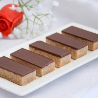
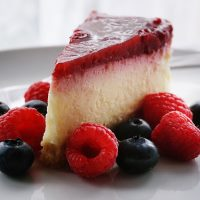
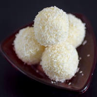
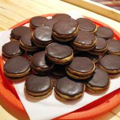

Sastojci:
- 500gr šećera
- 100gr vode
- 1 margarin
- 200gr mlevenog keksa
- 200gr mleka u prahu
- 150gr čokolade
- 5 kašika šećera
- 5 kašika vode
Priprema:
Ušpinovati (7 minuta) šećer i vodu. Dodati margarin, keks i mleko u prahu. U jednoj polovini dodati 2 štangle topljene čokolade. Glazura: čokolada, šečer, voda, parče margarina i malo zejtina.

Sastojci:
- 1 margarin
- 160g secera u prahu
- 160g pecenog kikirikija(neslanog i samlevenog)
- 160g mlevenog posnog keksa
- 3 stanglice cokolade
Priprema:
Umutiti margarin sa secerom, dodati mleveni kikiriki, mleveni keks, rastopljenu cokoladu.. Praviti kuglice i valjati ih u mleveni kikiriki.
Sastojci:
- Suvi sastojci
- 250gr brašna
- 2 kašičice praška za pecivo
- 1/2 kašičice sode bikarbone
- 2 kašičice kakaoa
- 175gr šečera
- 150gr seckane čokolade
- Tečni sastojci
- 250ml mleka
- 90ml ulja
- Jedno veliko jaje
- Kašičice ekstrata vanile
Priprema:
Zagrejati rernu na 200°. Kalup obložti folijom. Suve sastojke sipati u činiju. Dodati seckanu ćokoladu. Umutiti: jaje, mleko, ekstrat vanile, ulje-tek da se sjedini. Tečnu smesu sipati u drugu činuju i promešati. Peći oko 20minuta.
Sastojci:
- 300gr mlevene plazme
- 5 kašika mleka
- 180gr margarina
- 1 ela sir-450gr
- 1 krem fiks
- 1 vanila
- 50ml vode
- 1 želatin(10gr)
- 500ml biljne pavlake Meggle
- 220gr šećera u prahu
- 450gr cvenog voća
- 100ml vode
- 1 želatin
- 50ml vode za želatin
- 4 kašike šećera
Priprema:
Pomešati plazmu mleko i margarin. Umitit pavlaku,dodati krem fiks, vanilu, šećer u prahu, ela sir i želatin rastopljen u vodi. Skuvati crveno voće u vodi. Dodati razmućen želatin i šećer. Napraviti koru, staviti beli fil i preliti voćem.

Sastojci:
- 100gr mleko u prahu
- 100gr šećer u prahu
- 250gr kokosa
- 75ml mleka
- 1 margarin
Priprema:
Pomešati mleko u prahu, šećer u prahu, margarin i kokos. Postepeno dodavati mleko dok ne dobijete masu koja se čini dobrom za oblikovanje. Pre oblikovanja masu možete ostaviti u frižideru da malo odstoji. Praviti kuglice i valjdati ih u kokos. Po želji možete u centar svake staviti po lešnik

Sastojci:
- 1 margarin
- 250gr šećera u prahu
- 250gr mlevenih oraha
- Džem od šljive
- 150gr čokolade
- Kašika meda
Priprema:
Margarin, šećer u prahu i orahe umutiti mikserom, dodati brašna po potrebi. Rukom mesiti. Razviti koru, seći na krugove. Peći u podmazanom plehu. Spajati džemom od šljiva. Rastopiti čokoladu,med i margarin i preliti kolače.
